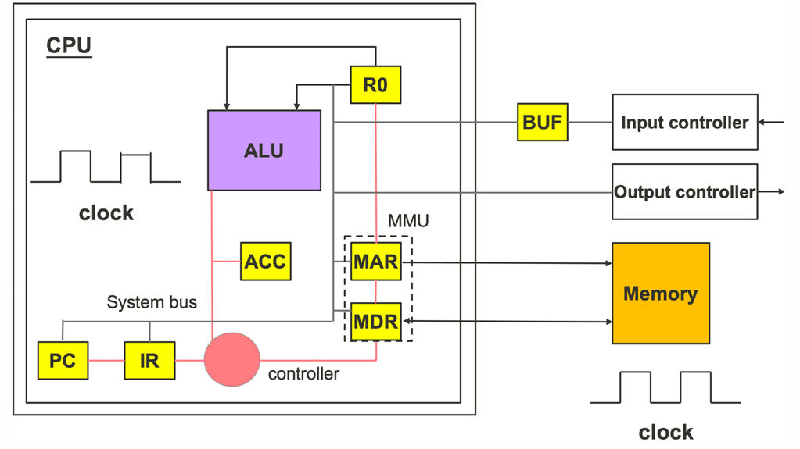
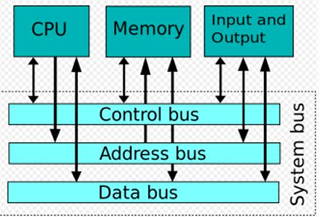
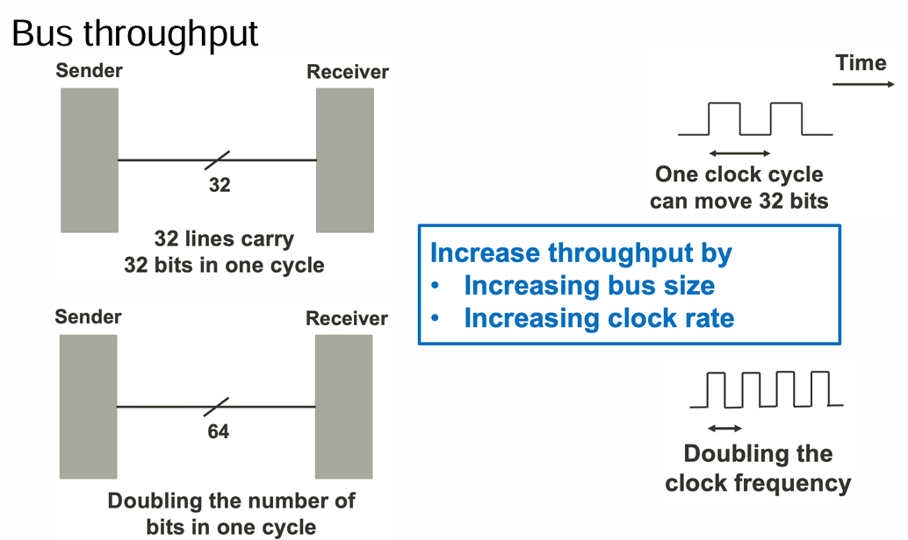
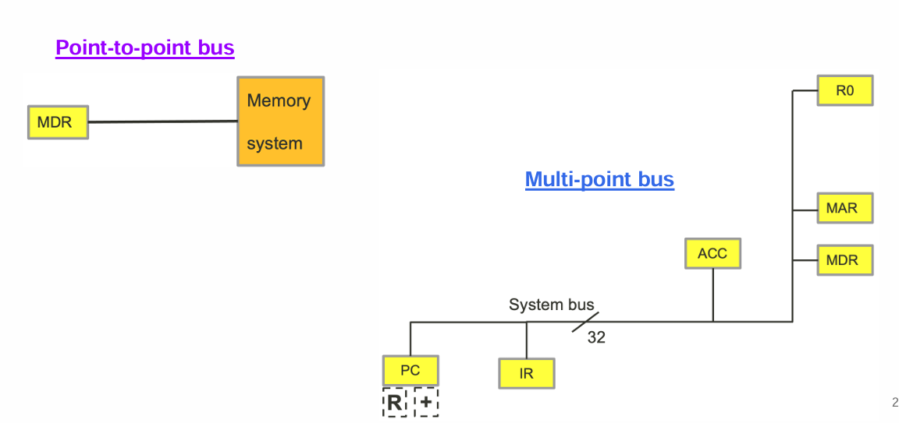

lecture6.1
Current Programmable computer design

CPU Technologies
- Execute instructions of computer program
- Two core components
- Arithmetic and Logic Unit (ALU)
- Controller
- Other components
- Memory management unit (MMU)
- Input controller
- Output controller
- Cache memory
Bus Technologies
Characteristics of Buses
- System bus is only one of the many buses in a computer system
A bus consists of many lines, for the following purposes:
- Data
- Data line is binary encoded. It carries one bit of data at a time
- Addressing
- Address line is binary encoded. It carries one bit of data at at time
- Control
- Control line is binary encoded. Data on control line is a signal
- E.g. Controller sends a signal to PC
- Power
- Computer system supplies stable voltage

Bus throughput
- Theoretical throughput of a multi-line bus
- Bus Throughput = Number of Lines * Data Rate per Line
- Data
Bus throughput depends on
- Data transfer rate
- Number of lines (or bits)
- Overhead of protocols (encoding)
- Distance between connected devices
- Addressing and control

Bus throughput (Example 1)Question: Assume each data line transfer 1 bit in 200 ns. Calculate the throughput if the bus has a total of 32 lines.
Answer:
Data rage per line = 1 bit / 200 ns = 5 Mbps
Bus throughput = Number of lines * Data rate per line = 32 x 5 Mbps = 160 Mbps / 8 = 20 MBps
Bus throughput (Example 2)
Some modern bus system supports multiple data movement in one clock rate E.g. Assisted Gunning Transceiver Logic (AGTL+) allows 4 transfers per cycle
Question: Given that an AGTL+ is running on a clock rate of 100 MHz. The bus is 64 bits. Calculate the throughput.
Anwer: Data rage per line = 100 Mbps x 4 transfers = 400 Mbps Bus throughput = Number of lines * Data rate per line = 64 x 400 Mbps = 25.6 Gbps / 8 = 3.2 GBps
Point-to-Point Bus and Multi-point Bus

Parallel bus
- More than 1 data lines or data channels sending data at the same time
- Transfer more than 1 bit at a time
- Problem of clock skew
- Signals of different data lines arrive at different time
- Problem of crosstalk
- Signals between data lines may interfere with each other
Serial bus
- Single data channel (sending 1 bit at a time)
- Most common form of buses
- Short and long(er) distance
- Can outperform parallel bus
- Running at a significantly fast clock rate
Cheaper in price
| Feature | Parallel Bus | Serial Bus | |-------------------|-------------------------------------------|--------------------------------------| | Data Transmission | Multiple bits simultaneously | One bit at a time | | Speed | Faster over short distances | Higher data rates over longer distances | | Complexity | More complex (multiple data lines) | Simpler (single data line) | | Example | PCI bus | USB, SATA | | Application | Internal computer components | External devices, long-distance communication |